Регистрация¶
К этому моменту у вас уже должен быть PESEL, доверенный профиль (Profil zaufany), адрес (хотя бы для корреспонденции). Мельдунек - необязателен.
Регистрация ИП на портале biznes.gov.pl¶
-
Сначала жмём на Logowanie в правом верхнем углу и попадаем на страницу с выбором вариант логина (как на картинке). Нас интересует Zaloguj się przez Login.gov.pl и логинимся с использованием доверенного профиля.
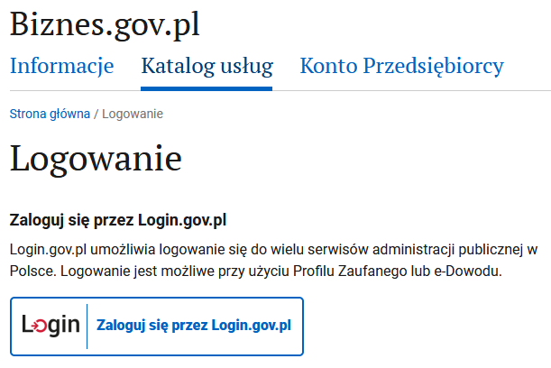
-
Выбираем в большом синем прямоугольнике ZAREJESTRUJ FIRMĘ:
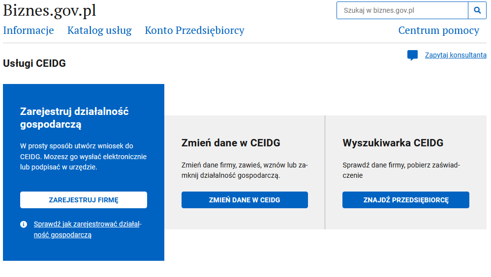
После этого начинается пошаговое заполнение формы на регистрацию ИП.
Заполнение формы регистрации¶
1. Окно информационное приветственное¶
Нажимаем на ROZPOCZNIJ
2. Важная информация¶

Нажимаем на DALEJ
3. Данные заявителя¶
Удаляем польское гражданство, добавляем ваше. В итоге должно получиться как на картинке выше.
Дальше заполняем свои данные: имя, фамилия, имя отца, имя матери, pesel, место рождения:
И ещё парочка вопросов:
- номера NIP скорее всего у вас нет.
- Заграничный идентификационный номер (тут их интересуют в основном европейские налоговые номера, но можете указать и беларуский/украинский).
- Совместное имущество: Если женаты/замужем и не имеете брачного контракта - указывайте "Tak". В противном случае - "Nie".
- и номер паспорта.
В итоге должно получиться как на картинке:
Нажимаем на DALEJ
4. Данные иностранца¶
Те кто на визе PBH вписывают номер визы и дату выдачи визы, оставляем чек-бокс с консулом, нажимаем на Wyszukaj и выбираем там посольство, которое выдало визу (например для Минска: Ambasada Rzeczypospolitej Polskiej w Republice Białorusi vulica Zmitraka Biaduli 11 :: Mińsk::). Ещё нужно учитывать, что страница ищет по польским названиям, поэтому Minsk просто так не находится, а Mińsk - находится.
Если открываете по карте поляка - то указываете, соответственно, данные карты поляка и организации, выдавшей карту.
У украинцев такой диалог вообще не появляется, но если появится - есть две опции:
- Если есть PESEL UKR: указываете PESEL.
- Если нет - отмечаете что приехали до войны и загружаете паспорт или другой документ.
Прикладываем сканы паспорта и визы (суммарный размер файлов не должен превышать 3.5mb, иначе будут проблемы с подписанием заявления), выбираем чек-бокс, что вам можно иметь ИП на территории Польши:

Нажимаем на DALEJ
5. Адрес проживания¶
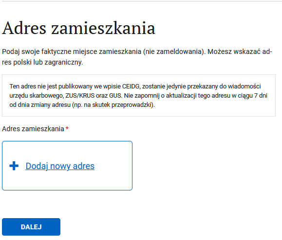
Нажимаем Dodaj nowy adres
Вводим адрес и жмём ZAPISZ. Здесь можно вводить заграничный адрес если на данный момент живете за границей. Потом его можно будет поменять. На ведении деятельности это никак не отразится.
И должно получиться как на картинке.
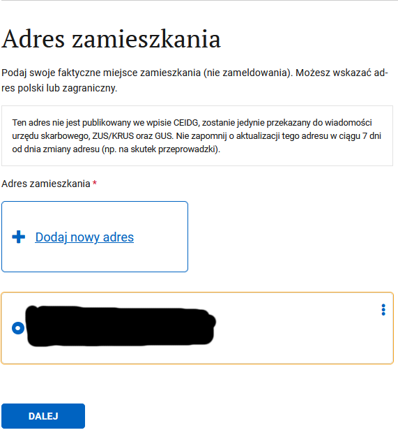
Нажимаем на DALEJ
6. Данные фирмы¶
Полное название фирмы должно содержать как минимум ваше имя и фамилию латиницей. Краткое название может быть любым. Для простоты рекомендую полное и краткое название указать в виде "Имя Фамилия".
Дата начала деятельности может быть как сегодня, так и в будущем. Потом ее можно будет поменять.
Еще нужно указать планируемое количество работников вместе с вами (то есть если не планируете нанимать работников, то 1).
Также, укажите галочкой планируете ли нанимать работников с ограниченными возможностями.

Номера REGON у вас скорее всего ещё нет. Контактные данные - те которые будут видны в публичном реестре CEIDG. Опционально - говорит само за себя, и можно не соглашаться на публикацию в CEIDG. И рекомендую данные не публиковать (Поставить галочку Nie), иначе сразу после регистрации на вас обрушится лавина спама.
Нажимаем на DALEJ
7. Коды деятельности¶
Нажимаем выбрать код, находим подходящий код, он будет основным. Можно добавить несколько, если надо (один всё равно должен быть выбран в качестве основного)
Нажимаем на DALEJ
8. Почтовый адрес¶
Тут надо указать адресата и адрес для корреспонденции. На этот адрес госорганы будут слать бумажные письма. Можно смело указывать адрес арендной квартиры, для вашего арендодателя ничего не изменится.
Нажимаем Dodaj nowy adres и в итоге получится как на картинке:

Нажимаем на DALEJ
9. Адрес ведения деятельности¶
У IT есть опция: не имею постоянного места ведения деятельности, выбирайте ее. Здесь вы, скорее всего, не хотите указывать адрес арендной квартиры. Если у вас такой адрес есть (реальный или виртуальный офис), тогда укажите его.

Нажимаем на DALEJ
10. Выбираем способ страхования¶
Все предприниматели в Польше обязаны уплачивать ЗУС, так что выбираем его и указываем дату, с которой начинаем платить ZUS (скорее всего будет совпадать с датой начала деятельности):

Нажимаем на DALEJ
11. Скарбовы ужонд¶
Подтягивается автоматически по ранее введённому адресу, если знаете, что вам в другой, то можно найти более подходящий:
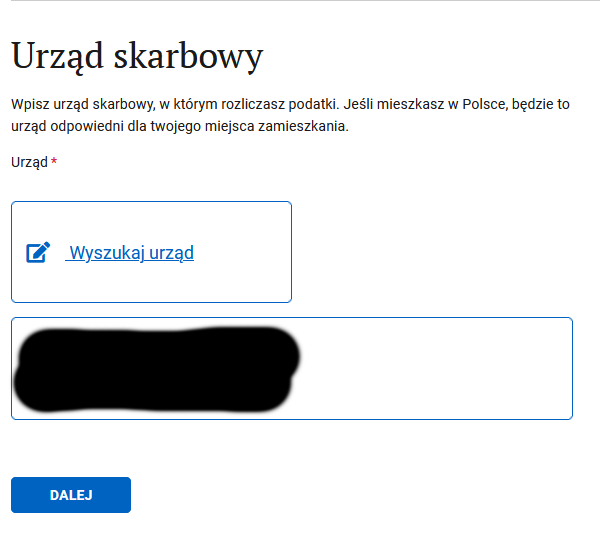
Нажимаем на DALEJ
12. Дополнительные сведения¶
На этом можно и закончить, но есть возможность сразу зарегистрироваться в ZUS и выбрать систему налогообложения. Чем мы и воспользуемся, выбирая первый пункт:

Нажимаем на DALEJ
13. Регистрация в ZUS¶
Чек-бокс, что хотим зарегистрироваться и что регистрируем только себя (ну или по обстоятельствам выбираем нужные пункты), и выбираем формуляр ZUS ZZA:
Нажимаем на DALEJ
14. Детали ZUS¶
Здесь можно выбрать ульгу на старт. Также, укажите если получаете пенсию и/или имеете инвалидность:
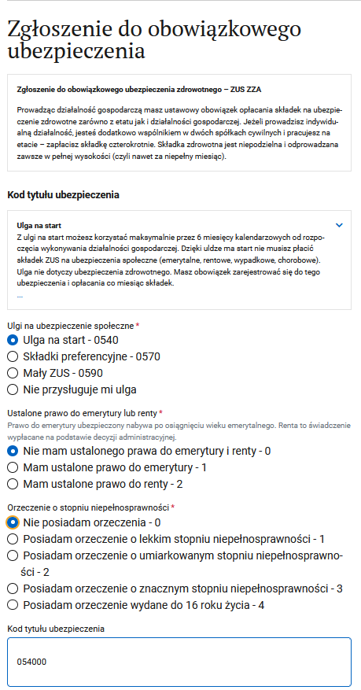
Нужен код деятельности, нажимаем на ссылку и ищем подходящий (например, Programista Aplikacji):
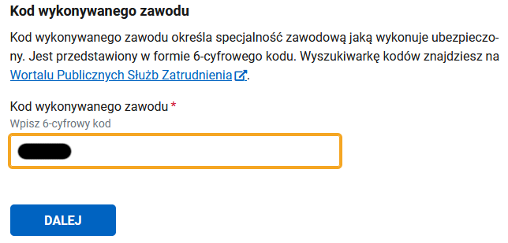
Нажимаем на DALEJ
15. Выбор отдела NFZ¶
Ищем свой отдел по месту жительства:
Нажимаем на DALEJ
16. Адрес мельдования¶
Адрес регистрации. Если у вас нет польского мельдунка - то укажите свой заграничный адрес регистрации:
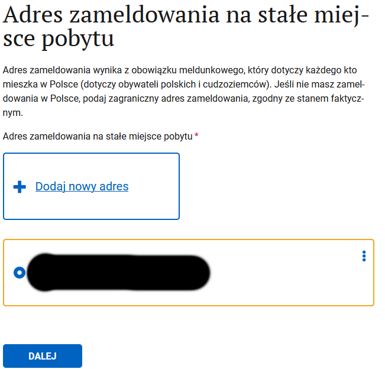
Нажимаем на DALEJ
17. Адрес для корреспонденции¶
Выбираем куда будет приходить бумажная почта от ZUS, опционально указываем мэйл и телефон для связи:
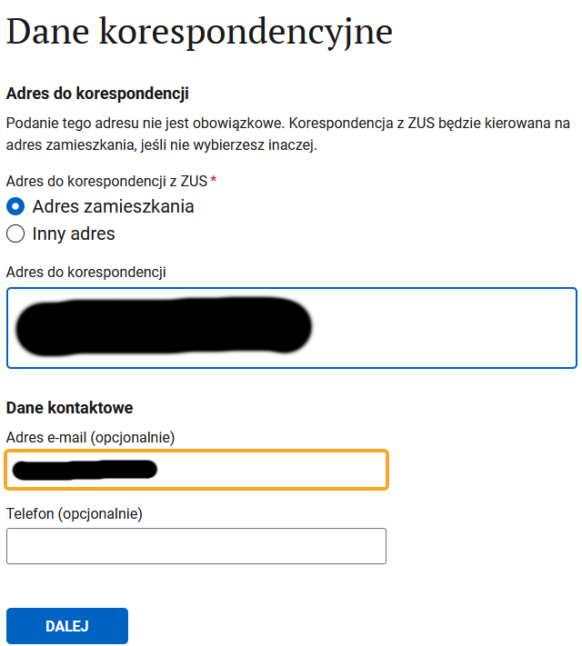
Нажимаем на DALEJ
18. Налоги¶
Можно сразу выбрать систему налогообложения или временно пропустить этот шаг.
Внимание! Пропускайте шаг выбора налоговой системы только в том случае, если Вы точно знаете, что делаете! Если Вы забудете сделать выбор до уплаты первого налога, по умолчанию будет считаться, что выбрана общая система (Skala podatkowa). Поменять выбор можно будет только с начала следующего года.
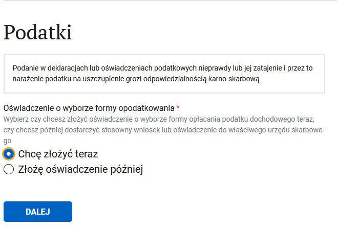
Нажимаем на DALEJ
19. Выбор системы налогообложения¶
Собственно выбираем систему налогообложения:
Нажимаем на DALEJ
20. Ведение бухгалтерии¶
Если вы выбрали систему налогообложения ryczałt - то можете выбрать упрощенный документооборот: (Zawiadam o prowadzeniu ksiąg rachunkowych - Nie).
Указываем, кто будет вести бухгалтерию: Сами или бухгалтер. Потом эти данные можно поменять.

Нажимаем на DALEJ
21. Адрес хранения бухгалтерский документов¶
Выбираем адрес, где будут храниться бухгалтерские документы:
Нажимаем на DALEJ
22. Банковские счета¶
Счёт в PLN понадобится, чтобы уплачивать налоги. Счета USD / EUR нужны для поступлений из-за рубежа. Разрешено использовать личный счёт (konto osobiste) для ИП. В некоторых случаях обязательно открывать бизнес-счёт (konto firmowe). Подробнее -> https://t.me/JDG_PBH/9236 и https://t.me/JDG_PBH/18806
Если планируете использовать только личный счёт, то его можно и указать. Если планируете открывать бизнес счёт, то его пока нет.

Нажимаем на DALEJ
23. Представительство¶
Возможно вам нужен представитель, у которого будет от вас доверенность, на какие-то действия. Его можно добавить на этом шаге.

Нажимаем на DALEJ
24. Заявление¶
Предупреждение об ответственности:

Нажимаем на DALEJ
25. Приостановка деятельности¶
Скорее всего вот так сразу вы деятельность приостановить не хотите:
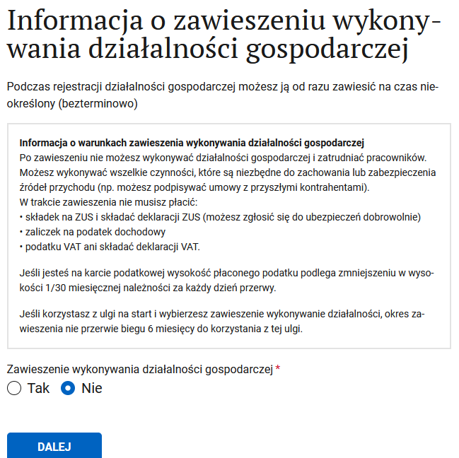
Нажимаем на DALEJ
26. Справочная инфа¶
Рассказывают, где и у кого можно получить больше информации и помощь, а также, кто ответственный за рассмотрение внеска.
Нажимаем на DALEJ
27. Ещё инфа, итоговая¶
Морально готовят к тому, что скоро всё закончится:
Нажимаем на DALEJ
28. Подписание документа¶
Если нажать на ссылки xml, то можно скачать формы себе на память. Выбираем что хотим подписать доверенным профилем (PROFIL ZAUFANY и BANKOWOŚĆ ELEKTRONICZNA - скорее всего приведут к одному и тому же результату, я выбирал банковость, потому что профиль регистрировал через банк):

Дальше переходим на собственно подписание, нужно нажать на Podpisz podpisem zaufanym:
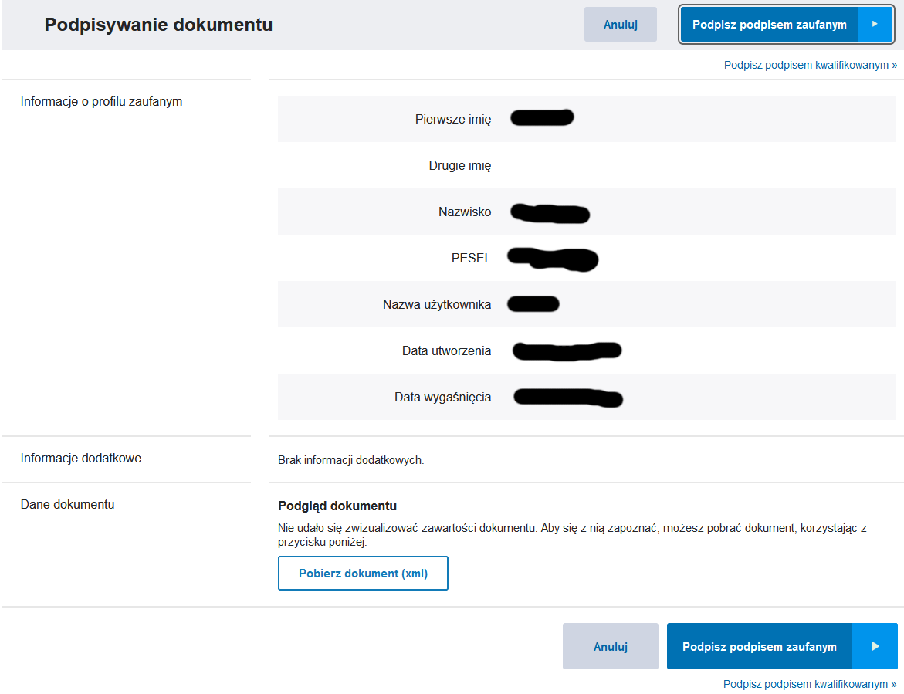
И наконец-то можно выслать подписанные документы:
Очень рекомендуется скачать и перепроверить своё заявление тут¶
- Выбираем в своих делах запись Zarejestruj działalność gospodarczą w CEIDG
- Рядом с 202NNNNN-NNNN-NNNN-wniosek.xml нажимаем Podgląd
В частности, стоит убедиться в том, что отмечена форма налогообложения, например, ryczałt (смотрим пункт 15. Oświadczenie o formie opłacania podatku dochodowego). Был случай: в заявлении форма налогообложения по какой-то (технической?) причине осталась не выбранной, человек вёл деятельность и исправно платил налоги в соответствии с формой ryczałt, и только после подачи декларации PIT-28 в следующем году с ним связался инспектор, сказал, что формуляр PIT-28 не может принять, потому что форма налогообложения не была выбрана, значит по умолчанию применяется общая форма, из чего следует необходимость пересчёта и доплаты налогов по общей форме налогообложения. Конечно, это было шоком и финансовым ударом. Поэтому сразу проверьте заявление.
Что дальше¶
Дальше вам сообщат о принятии заявления, и что ответ стоит ждать через 24 часа.
NIP может быть присвоен в течении одно-двух дней. REGON надо ждать больше - может выдаваться до недели. Если в процессе есть какие ошибки, то будет сообщение с просьбой исправить.
Проверить все данные вашей фирмы можно на biznes.gov.pl
Если что-то пошло не так, столкнулись с проблемами - можете написать в чат на biznes.gov.pl и задать вопрос.
Поддержите наш гайд чашкой кофе ♥
Регистрация плательщиком внутрипольского VAT¶
К этому моменту у вас уже должны быть номера NIP и REGON.
0. Для чего регистрировать польский VAT¶
Польский VAT вам понадобится если вы оказываете услуги польским заказчикам и превысили годовой лимит в 200_000 злотых. Либо вы хотите возвращать VAT c покупок на фирму.
Ссылка на портал где происходит регистрация. Нам нужен пункт Zmień dane w CEIDG.
1. Нас встречает важная информация¶

Ознакамливаемся и жмём DALEJ
2. Цель подачи формы¶

Нам надо только отредактировать данные. Дата может быть текущей или в прошлом. Выбирайте сегодняшнюю.
2.1. Указываем страхование¶
Отмечаем галочку ZUS
3. Выбираем данные, которые нужно изменить¶
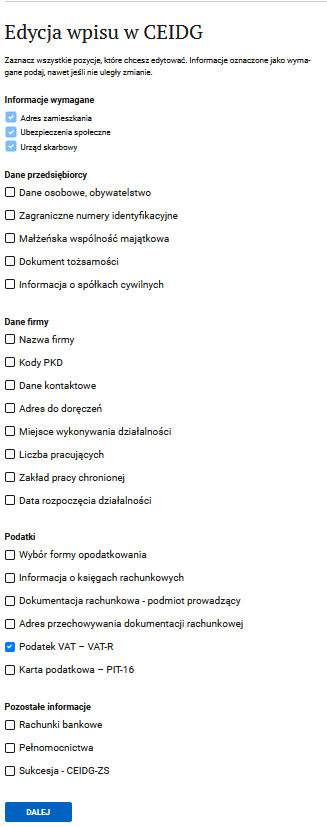
4. Выбираем пункт о регистрации плательщиком VAT¶
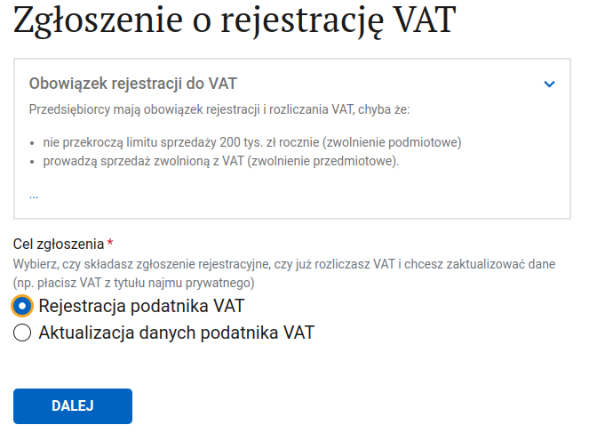
5. Отказываемся от освобождения¶
Здесь нужно отказаться от освобождения от VAT (лимит 200_000) иначе czynnym плательщиком мы не станем. Обратите внимание, что с момента регистрации VAT плательщиком вы обязаны выставлять польским заказчикам инвойсы с VAT, и, соответственно, его уплачивать.

6. Причина регистрации VAT-овцем¶
Выбираем Tytuł obowiązku podatkowego: 33.
В случае если ваш код деятельности не подлежит освобождению от VAT (к примеру, 62.02.Z) то выберите
пункт 36. Podatnik nie ma prawa do zwolnienia.

7. Дата начала VAT обязательств¶
Дата начала VAT обязательств должна быть, как минимум, на 1 день позже даты подачи заявления. Например, если заявление высылается 28 апреля, то самая ранняя дата регистрации — 29 апреля.
Начиная с этой даты вы должны выставлять фактуры с VAT, подавать декларации и имеете право на вычеты VAT за покупки на фирму для ведения деятельности даже если вас еще не добавили в белый список плательщиков VAT.
7.1 Пункт Zwolnienie usług finansowych¶
В этом пункте (он находится под датой) ничего выбирать не нужно, но если он случайно был отмечен, то сбросить его в начальное состояние не выйдет, нужно будет вернуться на шаг назад, и снова пройти вперед
8. Metoda kasowa¶
Почитать об этой штуке можно здесь, но вообще, оно нам не нужно. Отказываемся.
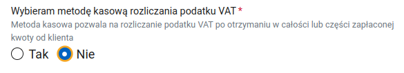
9. Золото и такси¶
Указываем что не ведем бизнес, связанный с такси и торговлей золотом (если правда не ведем, конечно).
10. VAT-UE¶
Одновременно с польским VAT можно зарегистрировать VAT-UE. Если вам нужно - продолжайте по ссылке. Если не нужно - отказывайтесь и переходите к следующему пункту.
11. Выбрать тип деклараций¶
Можно подавать декларации как ежемесячно, так и поквартально. Я рекомендую выбрать ежемесячные декларации. Промежутком времени, за который будет отправлена первая декларация выберите месяц, с которого начинается ваше VAT обязательство (пункт 7 этого руководства).

12. Выберите свою налоговую¶

13. Подтверждение регистрации VAT¶
Можете отказаться от платного получения подтверждения регистрации VAT. Вряд ли оно когда-нибудь вам пригодится.

14. Освядчение¶
Дальше нужно утвердить что вы имеете право пользования адресом, под которым живете (договор аренды, например) и что на вас не распространяются запреты, о которых написано в приведенном законе.

15. Подпись¶
Дальше, как обычно, подписываем внёсек профилем зауфаным, отправляем и ждем регистрации или письма от налоговой с уточнениями. Если процесс регистрации затягивается - напишите в налоговую или сходите ногами и узнайте чего им не хватает.
Отследить, что вы были зарегистрированы можно на сайте.
Это - так называемый белый список, biała lista, список всех плательщиков VAT.
Поддержите наш гайд чашкой кофе ♥
Регистрация плательщиком VAT-UE¶
К этому моменту у вас уже должны быть номера NIP и REGON. По регламенту, у ужонда есть 30 дней для вашей регистрации.
Пока вас не зарегистрируют - нельзя получить выплату!
0. Для чего вообще нужна регистрация VAT-UE¶
После отправки заявления в налоговую приходит такое письмо: "w związku ze złożeniem do tutejszego Urzędu Skarbowego złożenia druku rejestracyjnego VAT-R, proszę o przestawienie prawa do lokalu w którym jest wykonywana działalność gospodarcza." В ответе на данное письмо необходимо прислать контракт на квартиру, в котором прописано разрешение деятельности, или разрешение собственника отдельной бумагой, или контракт с виртуальным офисом. Впрочем, в телеграме пишут, что можно разобраться с налоговой и без каких-либо заявлений...
Ссылка на портал где происходит регистрация. Нам нужен пункт Zmień dane w CEIDG.
1. Нас встречает важная информация¶
Ознакамливаемся и жмём DALEJ
2. Цель подачи формы¶
Нам надо только отредактировать данные. Дата может быть текущей, либо в прошлом.
3. Выбираем данные, которые нужно изменить¶
Нас интересует регистрация VAT. Первые три чек-бокса проставляются автоматически.
4. Данные иностранца¶
Подтверждаем, что являемся иностранцем, который может осуществлять предпринимательскую деятельность на территории Польши.
5. Адрес проживания¶
Если надо, то меняем адрес проживания.
6. Страхование¶
Мы всё ещё остаёмся в ZUS. Дату скорее всего указывали при регистрации в ZUS, поэтому можно её не менять.
7. Изменение данных ZUS¶
Если не хотим ничего менять, то не меняем.
8. Налоговая¶
Если надо, то можно поменять налоговую.
9. Собственно, цель заявления¶
Если вы ещё не были зарегистрированы, то хотите зарегистрироваться плательщиком VAT. Если вы уже регистрировались на VAT - то выбирайте aktualizacja.
10. Внутрипольский VAT¶
Одновременно с VAT-UE можно зарегистрироваться плательщиком польского VAT. Если вы этого хотите или уже зарегистрированы как czynny плательщик польского VAT - то продолжайте по ссылке.
Если вы хотите зарегистрироваться только на VAT-UE - то выбирайте "Tak" чтобы пользоваться освобождением от польского VAT. Датой укажите дату начала деятельности своего ИП.
11. Идентификационные данные¶
Нужно указать имя отца и матери. Очень желательно, чтобы латиница совпадала с тем, как у них в документах указано. Просто на всякий случай.
12. Регистрация VAT-UE¶
Хотим зарегистрироваться плательщиком VAT-UE
13. Регистрация плательщиком VAT UE¶
Первый чек-бокс для тех, кто собирается покупать или продавать товары. Второй чек-бокс для тех, кто собирается покупать или продавать услуги. Мы точно знаем, что собираемся продавать услуги, поэтому точно выбираем второй. Для покупки чего-либо, вроде бы, необязательно быть зарегистрированным. Поэтому если на данный момент точно знаете, что не собираетесь продавать товары на экспорт, то можно одним чек-боксом и ограничится.
Дата регистрации VAT должна быть как минимум на 1 день позже даты подачи заявления. Например, если заявление высылается 28 апреля, то самая ранняя дата регистрации — 29 апреля.
14. Информация о заявителе¶
Если нужно, то можно выбрать другую налоговую и указать контактные данные. Опциональные - но они могут упростить коммуникацию с налоговой.
15. Подтверждение регистрации плательщиком VAT¶
Скорее всего оно вам не надо.
16. Предупреждение об ответственности¶
На свой страх и риск соглашаемся с тем, что хотим подать заявление, и ничего криминального в наших начинаниях нет.
17. Где можно получить больше инфы¶

Просто жмём DALEJ
18. Информация итоговая¶

Просто жмём DALEJ
19. Подписание документов¶
Кликнув на ссылки xml, можно скачать формы себе на память. Выбираем способ подписания. Доверенный профиль и банковость - две стороны одной медали. Если делали доверенный профиль через банк, то можно выбирать банковость.
20. Отправка документов¶
После нехитрой операции подписания, можно отправить документы.
21. Итог¶
Дальше ждём письмо от CEIDG, что с заявлением всё в порядке, и оно принято и зарегистрировано (или что нужно что-то исправить). И потом в течение месяца придёт бумажное письмо из налоговой о присвоении номера VAT-UE (либо требование о предоставлении дополнительных сведений, особенно актуально для тех, у кого нет постоянного места деятельности). Чуть быстрее, чем бумажное письмо от налоговой, отследить появление номера можно на сайте. Номер VAT-UE - это ваш NIP с приставкой PL. Появляется через пару недель от подачи заявления на регистрацию либо через неделю+ от ответа на требования налоговой.
Так же есть телеграм бот, который позволяет подписаться и отслеживать вашу регистрацию
Поддержите наш гайд чашкой кофе ♥